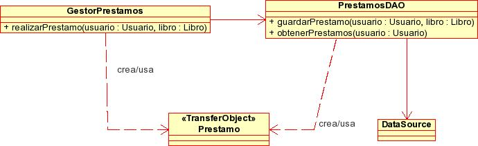

Transacciones, optimización de sentencias y patrones de datos
Optimización de sentencias
Cuando ejecutamos una sentencia SQL, esta se compila y se manda al SGBD. Si la vamos a invocar repetidas veces, puede ser conveniente dejar esa sentencia preparada (precompilada) para que pueda ser ejecutada de forma más eficiente. Para hacer esto utilizaremos la interfaz PreparedStatement, que podrá obtenerse a partir de la conexión a la BD de la siguiente forma:
PreparedStatement ps = con.prepareStatement("UPDATE FROM alumnos
SET sexo = 'H' WHERE exp>1200 AND exp<1300");
Vemos que a este objeto, a diferencia del objeto Statement visto anteriormente, le proporcionamos la sentencia SQL en el momento de su creación, por lo que estará preparado y optimizado para la ejecución de dicha sentencia posteriormente.
Sin embargo, lo más común es que necesitemos hacer variaciones sobre la sentencia, ya que normalmente no será necesario ejecutar repetidas veces la misma sentencia exactamente, sino variaciones de ella. Por ello, este objeto nos permite parametrizar la sentencia. Estableceremos las posiciones de los parámetros con el carácter '?' dentro de la cadena de la sentencia, tal como se muestra a continuación:
PreparedStatement ps = con.prepareStatement("UPDATE FROM alumnos
SET sexo = 'H' WHERE exp > ? AND exp < ?");
En este caso tenemos dos parámetros, que será el número de expediente mínimo y el máximo del rango que queremos actualizar. Cuando ejecutemos esta sentencia, el sexo de los alumnos desde expediente inferior hasta expediente superior se establecerá a 'H'.
Para dar valor a estos parámetros utilizaremos los métodos setXXX donde XXX será el tipo de los datos que asignamos al parámetro (recordad los métodos del ResultSet), indicando el número del parámetro (que empieza desde 1) y el valor que le queremos dar. Por ejemplo, para asignar valores enteros a los parámetros de nuestro ejemplo haremos:
ps.setInt(1,1200); ps.setInt(2,1300);
Una vez asignados los parámetros, podremos ejecutar la sentencia llamando al método executeUpdate (ahora sin parámetros) del objeto PreparedStatement:
int n = ps.executeUpdate();
Igual que en el caso de los objetos Statement, podremos utilizar cualquier otro de los métodos para la ejecución de sentencias, executeQuery o execute, según el tipo de sentencia que vayamos a ejecutar.
Una característica importante es que los parámetros sólo sirven para datos, es decir, no podemos sustituir el nombre de la tabla o de una columna por el signo '?'. Otra cosa a tener en cuenta es que una vez asignados los parámetros, estos no desaparecen, sino que se mantienen hasta que se vuelvan a asignar o se ejecute una llamada al método clearParameters.
SQL injection
Un problema de seguridad en la base de datos que se nos puede plantear es el SQL injection. Se trata de insertar código SQL dentro de otro código SQL, para alterar su funcionamiento y conseguir que se ejecute alguna sentencia maliciosa. Imaginad que tenemos el siguiente código en una página .jsp o en una clase Java:
String s="SELECT * FROM usuarios WHERE nombre='"+nombre+"';";
La variable nombre es una cadena cuyo valor viene de un campo que es introducido por el usuario. Al introducir el usuario un nombre cualquiera, el código SQL se ejecuta y nada extraño pasa. Pero esta opción nos permite añadir código propio que nos permita dañar o incluso permitirnos tomar el control de la BD. Imaginad que el usuario ha introducido el siguiente código: Miguel'; drop table usuarios; select * from usuarios; grant all privileges .... Entonces el código que se ejecutaría sería:
SELECT * FROM usuarios WHERE nombre='Miguel'; drop table usuarios; select * from usuarios; grant all privileges ...
Para evitar la inyección de SQL se recurre, en Java, a usar una sentencia preparada. De esta manera tendríamos:
PreparedStatement ps = con.prepareStatement(
"SELECT * FROM usuarios WHERE nombre=?");
ps.setString(nombre);
Y la sentencia SQL que se ejecutaría, con la misma entrada que antes, es:
SELECT * FROM usuarios WHERE nombre="Miguel'; drop table usuarios; select * from usuarios; grant all privileges ...";
Transacciones
Muchas veces, cuando tengamos que realizar una serie de acciones, queremos que todas se hayan realizado correctamente, o bien que no se realice ninguna de ellas, pero no que se realicen algunas y otras no.
Podemos ver esto mediante un ejemplo, en el que se va a hacer una reserva de vuelos para ir desde Alicante a Osaka. Para hacer esto tendremos que hacer trasbordo en dos aeropuertos, por lo que tenemos que reservar un vuelo Alicante-Madrid, un vuelo Madrid-Amsterdam y un vuelo Amsterdam-Osaka. Si cualquiera de estos tres vuelos estuviese lleno y no pudiésemos reservar, no queremos reservar ninguno de los otros dos porque no nos serviría de nada. Por lo tanto, sólo nos interesa que la reserva se lleve a cabo si podemos reservar los tres vuelos.
Una transacción es un conjunto de sentencias que deben ser ejecutadas como una unidad, de forma que si una de ellas no puede realizarse, no se llevará a cabo ninguna. Dicho de otra manera, las transacciones hacen que la BD pase de un estado consistente al siguiente.
Pero para hacer esto encontramos un problema. Pensemos en nuestro ejemplo de la reserva de vuelos, en la que necesitaremos realizar las siguientes inserciones (reservas):
try {
stmt.executeUpdate("INSERT INTO RESERVAS(pasajero, origen, " +
+ "destino) VALUES('Paquito', 'Alicante', 'Madrid')");
stmt.executeUpdate("INSERT INTO RESERVAS(pasajero, origen, " +
+ "destino) VALUES('Paquito', 'Madrid', 'Amsterdam')");
stmt.executeUpdate("INSERT INTO RESERVAS(pasajero, origen, " +
+ "destino) VALUES('Paquito', 'Amsterdam', 'Osaka')");
}
catch(SQLException e) {
// ¿Dónde ha fallado? ¿Qué hacemos ahora?
}
En este caso, vemos que si falla la reserva de uno de los tres vuelos obtendremos una excepción, pero en ese caso, ¿cómo podremos saber dónde se ha producido el fallo y hasta qué acción debemos deshacer? Con la excepción lo único que sabemos es que algo ha fallado, pero no sabremos dónde ha sido, por lo que de esta forma no podremos saber hasta qué acción debemos deshacer.
Para hacer esto de una forma limpia asegurando la consistencia de los datos, utilizaremos las operaciones de commit y rollback.
Cuando realicemos cambios en la base de datos, estos cambios se harán efectivos en ella de forma persistente cuando realicemos la operación commit. En el modo de operación que hemos visto hasta ahora, por defecto tenemos activado el modo auto-commit, de forma que siempre que ejecutamos alguna sentencia se realiza commit automáticamente. Sin embargo, en el caso de las transacciones con múltiples sentencias, no nos interesará hacer estos cambios persistentes hasta haber comprobado que todos los cambios se pueden hacer de forma correcta. Para ello desactivaremos este modo con:
con.setAutoCommit(false);
Al desactivar este modo, una vez hayamos hecho las modificaciones de forma correcta, deberemos hacerlas persistentes mediante la operación commit llamando de forma explícita a:
con.commit();
Si por el contrario hemos obtenido algún error, no queremos que esas modificaciones se lleven a cabo finalmente en la BD, por lo que podremos deshacerlas llamando a:
con.rollback();
Por lo tanto, la operación rollback deshará todos los cambios que hayamos realizado para los que todavía no hubiésemos hecho commit para hacerlos persistentes, permitiéndonos de esta forma implementar estas transacciones de forma atómica.
Nuestro ejemplo de la reserva de vuelos debería hacerse de la siguiente forma:
try {
con.setAutoCommit(false);
stmt.executeUpdate("INSERT INTO RESERVAS(pasajero, origen, " +
+ "destino) VALUES('Paquito', 'Alicante', 'Madrid')");
stmt.executeUpdate("INSERT INTO RESERVAS(pasajero, origen, " +
+ "destino) VALUES('Paquito', 'Madrid', 'Amsterdam')");
stmt.executeUpdate("INSERT INTO RESERVAS(pasajero, origen, " +
+ "destino) VALUES('Paquito', 'Amsterdam', 'Osaka')");
// Hemos podido reservar los tres vuelos correctamente
con.commit();
}
catch(SQLException e) {
// Alguno de los tres ha fallado, deshacemos los cambios
try {
con.rollback();
}
catch(SQLException e) {};
}
Una característica relacionada con las transacciones es la concurrencia en el acceso a la BD. Dicho de otra forma, qué sucede cuando varios usuarios se encuentran accediendo a la vez a los mismos datos y pretenden modificarlos. Un ejemplo sencillo: tenemos una tienda y dos usuarios están accediendo al mismo disco, del cual sólo queda una unidad. El primero de los usuarios consulta el disponible, comprueba que existe una unidad y lo introduce en su cesta de la compra. El otro usuario en ese preciso momento también está consultando el disponible, también le aparece una unidad y también intenta introducirlo en su cesta de la compra. Al segundo usuario el sistema no debería dejarle actualizar los datos que está manejando el primero.
La concurrencia es manejada por los distintos SGBD de manera distinta. PostGres permite nivel de lectura confirmada. En este nivel, si una transacción lee una fila de la BD y otra transacción cambia la misma fila, en el momento que la primera transacción intente leer de nuevo se actualiza el valor. Si las dos intentan modificar la misma fila la segunda se bloqueará hasta que la primera finalice la transacción. Esto último hay que tenerlo en cuenta para evitar bloqueos. Para saber el nivel concurrencia permitido por el SGBD podemos utilizar el siguiente método de la clase Connection:
int con.getTransactionIsolation();
Los valores más comunes que puede devolver este método son: Connection.TRANSACTION_NONE (no soporta transacciones), Connection.TRANSACTION_READ_UNCOMMITTED (soporta transacciones en su nivel más bajo), Connection.TRANSACTION_READ_COMMITTED (el nivel de PostGres antes comentado). MySQL incorpora transacciones en sus últimas versiones. Sin embargo, su funcionamiento es diferente a PostGres. Si una aplicación actualiza una fila y dentro de su transacción otra aplicación intenta modificarla, MySQL permite la actualización y no se produce ningún problema.
Un posible problema en las transacciones es el interbloqueo. Un interbloqueo se produce en la siguiente situación: una aplicación tiene que modificar dos registros. Otra aplicación modifica los mismos, pero en orden inverso. Se empiezan a ejecutar las dos aplicaciones a la vez y al haber modificado un registro no dejan que la otra lo modifique. Sin embargo, ninguna de las dos terminan porque están esperando que se desbloquee su registro. MySQL no detecta esta situación. Es más, permite cambiar los datos que una transacción sin finalizar haya realizado. PostGres, al bloquear los registros sí que provoca un interbloqueo que detecta y lanza una excepción.
Data Access Object (DAO)
Problema a resolver
Supongamos que el código de acceso a los recursos de datos (normalmente bases de datos relacionales) está incluído dentro de clases que tienen además otras responsabilidades diferentes. Por ejemplo supongamos que en una biblioteca tuviéramos una clase GestorPrestamos que se ocupara de realizar y gestionar los préstamos de libros. En una primera aproximación podríamos hacer que esta clase se encargara tanto de la lógica de negocio (por ejemplo comprobar si un usuario es "moroso" antes de prestarle un libro) como del acceso a datos (introducir el préstamo en una hipotética tabla de préstamos).
Este tipo de enfoque lleva a sistemas poco modulares y difícilmente mantenibles. En nuestro caso, el cambio de las reglas de negocio implicaría cambios en GestorPrestamos. El problema es que además, un cambio en la base de datos también implica cambios en GestorPrestamos.
Claramente la implementación de GestorPrestamos descrita con anterioridad viola el principio de separación de incumbencias. Si nos llevamos la persistencia de datos a una clase separada y dejamos GestorPrestamos solo con la lógica de negocio conseguimos un sistema mucho más modular y mantenible.
Discusión y beneficios
El DAO (Data Access Object) es un patrón de diseño directamente basado en el separation of concerns, en el que se separa la persistencia de datos del resto de funcionalidades del sistema. El siguiente esquema UML muestra una estructura de clases típica para el DAO de préstamos de la biblioteca:

Como se observa en la figura, el DAO es el punto de entrada al almacén de datos (aquí representado por un DataSource JDBC) y proporciona operaciones de tipo CRUD (Create-Read-Update-Delete).
Destacamos algunos puntos importantes:
- Como se ve, el DAO no tiene por qué implementar todas las operaciones CRUD (quizá en nuestro sistema no se puedan borrar los préstamos, solo devolver el libro quedando el registro del préstamo en la base de datos).
- En general (aunque esto es una decisión de diseño), por cada objeto de negocio en nuestro sistema, crearemos un DAO distinto. En nuestro caso además del PrestamosDAO podríamos tener también un UsuarioDAO y un LibroDAO.
- Aunque aquí el almacén de datos se representa como una base de datos compatible JDBC no tiene por qué ser siempre así, como discutiremos a continuación
- La información que devuelve o se le pasa al DAO se encapsula en objetos de tipo transfer object (en nuestro caso la clase Prestamo), que, simplificando, no son más que "contenedores de información" y que trataremos en la discusión del patrón correspondiente.
Hay que tener en cuenta que si el DAO se considera un patrón J2EE (o hablando más en general un patrón de aplicaciones de tipo enterprise) es porque prácticamente todas las aplicaciones J2EE de cierta dimensión hacen uso intensivo de almacenes persistentes de datos (normalmente bases de datos relacionales) aunque muchas aplicaciones J2SE no lo hagan.
Otro importante beneficio del DAO es la independencia del almacén de datos: el cambio de motor de base de datos o el paso de usar un pequeño archivo XML a usar una base de datos relacional para almacenar datos solo afectará al DAO y no a las clases encargadas de la lógica de negocio o de presentación. Se suele usar el patrón Factory para poder instanciar los DAOs reduciendo al máximo la dependencia del DAO concreto a crear (por ejemplo de MySQL, Oracle, XML, fichero .properties, ...)
Relación con otros patrones
El DAO se relaciona comúnmente con los siguientes patrones:
- Transfer object: la información que se envía/recibe del DAO se "empaqueta" en estos objetos.
- Factory: con el objeto de conseguir la independencia del almacén de datos, comúnmente se usa este patrón para instanciar los DAOs.
Ejemplo
Vamos a ilustrar el uso de estos patrones con un ejemplo. En primer lugar, para instanciar los DAOs utilizaremos el patrón factoría. Nuestra factoría tendrá una serie de métodos con los que podremos obtener los diferentes DAOs.
public class FactoriaDAOs {
private static FactoriaDAOs me = new FactoriaDAOs();
private FactoriaDAOs() {
}
public static FactoriaDAOs getInstance() {
return me;
}
public ILibroDAO getLibroDAO() {
return new LibroJDBCDAO();
}
public IClienteDAO getClienteDAO() {
return new ClienteJDBCDAO();
}
}
Podemos observar que el tipo de datos que realmente devuelven los métodos de la factoría son las interfaces que definen nuestros DAOs. De esta forma, si queremos cambiar la implementación del DAO (por ejemplo para acceder a los datos mediante JPA, en lugar de JDBC), lo único que tendremos que hacer es instanciar en la factoría otra implementación distinta de la correspondiente interfaz, y el resto de la aplicación no se verá afectada. En esta interfaz definiremos las operaciones que nos ofrece el DAO:
public interface ILibroDAO {
LibroTO selectLibro(String isbn) throws DAOException;
void addLibro(LibroTO libro) throws DAOException;
int delLibro(String isbn) throws DAOException;
List<LibroTO> getAllLibros() throws DAOException;
int updateLibro(LibroTO libro) throws DAOException;
}
Una posible implementación de la anterior interfaz es la siguiente:
public class LibroJDBCDAO implements ILibroDAO {
public LibroTO selectLibro(String isbn) throws DAOException {
LibroTO libro = null;
Connection conn = null;
PreparedStatement st = null;
ResultSet rs = null;
try {
String query = "select * from LIBRO where ISBN = ?";
conn = FuenteDatosJDBC.getInstance().createConnection();
st = conn.prepareStatement(query);
st.setString(1, isbn);
rs=st.executeQuery();
if (rs.next()) {
libro = new LibroTO();
libro.setIsbn(isbn);
libro.setTitulo(rs.getString("titulo"));
libro.setAutor(rs.getString("autor"));
libro.setNumPaginas(rs.getInt("numPaginas"));
libro.setFechaAlta(rs.getDate("fechaAlta"));
}
} catch (SQLException sqle) {
throw new DAOException("Error en el select de libro", sqle);
} finally {
try {
if (rs != null) {
rs.close();
rs = null;
}
if (st != null) {
st.close();
st = null;
}
if (conn != null) {
conn.close();
conn = null;
}
} catch (SQLException sqlError) {
throw new RuntimeException("Error cerrando las conexiones",
sqlError);
}
}
return libro;
}
...
}
En esta implementación se utiliza JDBC para acceder a los datos. Hemos de destacar en ella el uso de nested exceptions para encapsular los errores que puedan producirse en la utilización de JDBC. De esta manera, a la capa superior siempre le llegarán excepciones de tipo DAOException, lo cual nos aislará de la implementación concreta que utilicemos para acceder a los datos (esto no sería así si devolviesemos SQLException, que pertenece a la librería JDBC). También es importante cerrar las conexiones siempre en el bloque finally, tal como podemos ver en el ejemplo, para así asegurarnos de que siempre se cierren, pase lo que pase en el método.
Destacamos también el uso del patrón transfer object (TO) para encapsular y devolver los datos obtenidos. El objeto TO tiene como campos todos los datos que se obtienen en la consulta, y los correspondientes getters y setters para acceder a ellos:
public class LibroTO {
private static final long serialVersionUID =
5874144497759547336L;
private String isbn;
private String titulo;
private String autor;
private int numPaginas;
private Date fechaAlta;
public LibroTO() {
}
public LibroTO(String isbn, String titulo, String autor,
int numPaginas, Date fechaAlta) {
this.init(isbn, titulo, autor, numPaginas, fechaAlta);
}
public LibroTO(LibroTO libro) {
this.init(libro.isbn, libro.titulo, libro.autor,
libro.numPaginas, libro.fechaAlta);
}
private void init(String isbn, String titulo, String autor,
int numPaginas, Date fechaAlta) {
this.isbn = isbn;
this.titulo = titulo;
this.autor = autor;
this.numPaginas = numPaginas;
this.fechaAlta = fechaAlta;
}
public String getAutor() {
return autor;
}
public void setAutor(String autor) {
this.autor = autor;
}
// Resto de getters y setters
...
}
Utilizaremos este tipo de objetos para encapsular los datos que nuestro DAO intercambie con las capas superiores. Estos serán los datos que se obtengan en las consultas, o bien los datos que queramos insertar o modificar.
Por último, hemos visto que nuestro DAO obtenía las conexiones a través de un objeto FuenteDatosJDBC. Este objeto nos permitirá independizarnos de la forma de obtener las conexiones. De esta forma, posteriormente podría ser modificado para que en lugar de crear nuevas conexiones directamente, las obtenga a partir de una fuente de datos gestionada por un servidor de aplicaciones.
public class FuenteDatosJDBC {
private static FuenteDatosJDBC me = new FuenteDatosJDBC();
private static Log logger =
LogFactory.getLog(FuenteDatosJDBC.class.getName());
private FuenteDatosJDBC() {
try {
Class.forName("com.mysql.jdbc.Driver");
} catch (ClassNotFoundException cnfe) {
logger.fatal("No se encuentra el Driver de MySQL ",cnfe);
}
}
public static FuenteDatosJDBC getInstance() {
return me;
}
public Connection createConnection() {
Connection conn = null;
try {
conn = DriverManager.getConnection(
"jdbc:mysql://localhost/biblioteca", "root", "");
} catch (SQLException sqle) {
logger.fatal("No se ha podido crear la conexion", sqle);
}
return conn;
}
}